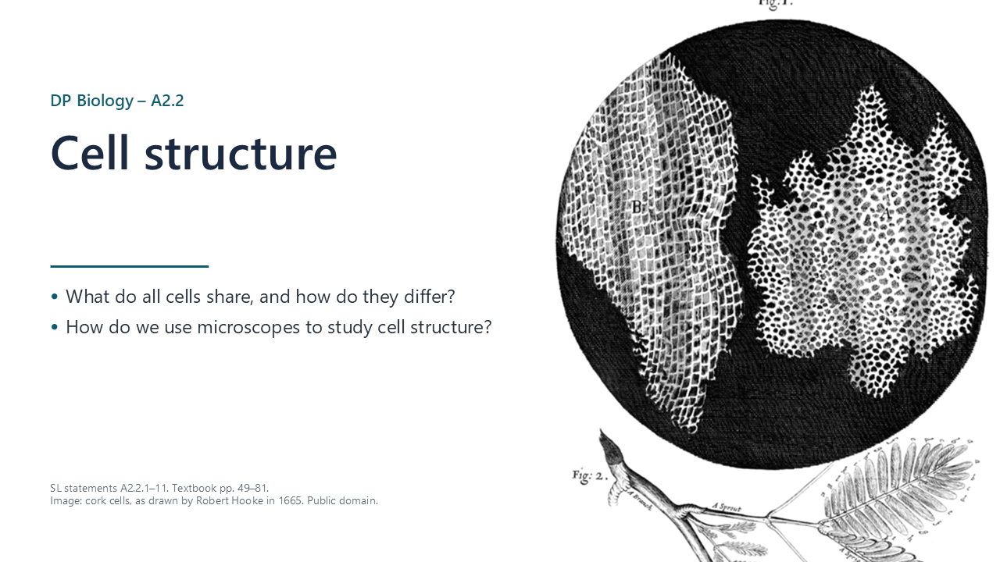
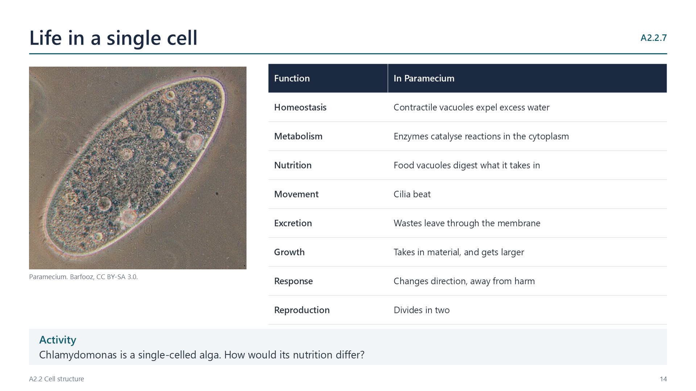
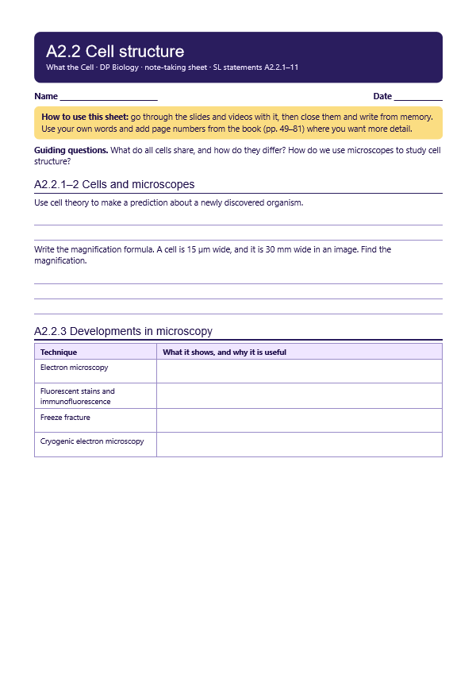
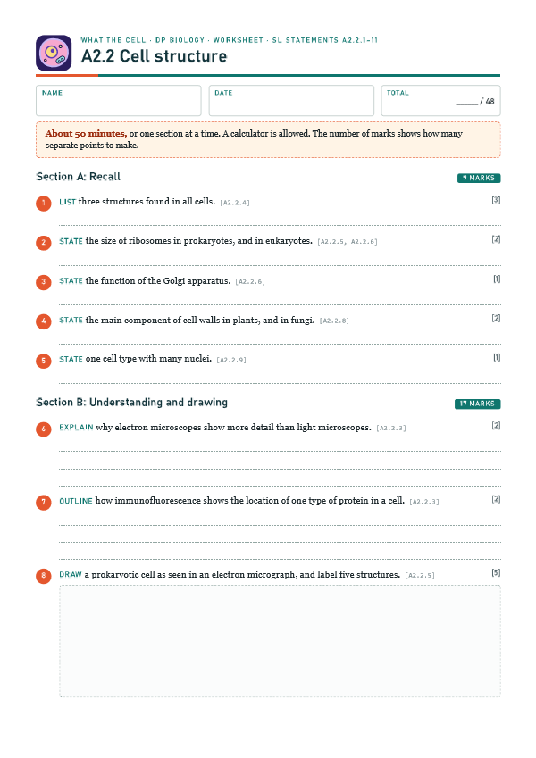

Cells: the basic unit of life
pp. 49–81All organisms are built from cells, the basic unit of structure. Using deductive reasoning, cell theory predicts that a newly discovered organism will consist of one or more cells.

Written for this site from the class slides. The chapter is on pages 49–81 of the course textbook. Image credits are on slide 30.
All organisms are built from cells, the basic unit of structure. Using deductive reasoning, cell theory predicts that a newly discovered organism will consist of one or more cells.
Practise making temporary mounts, staining, focusing with coarse and fine adjustment, and measuring with an eyepiece graticule. Magnification = image size / actual size. For example, a cell 8 µm wide drawn 40 mm wide has a magnification of 40 000 / 8 = ×5000.
Watch out: convert to the same units first. 1 mm = 1000 µm.
| Technique | Why it is useful |
|---|---|
| Electron microscopy | Electrons have a shorter wavelength, so resolution is far higher |
| Fluorescent stains | Show chosen structures in colour |
| Immunofluorescence | Antibodies carry a dye to one specific target |
| Freeze fracture | Frozen cells split along the middle of membranes, revealing surfaces |
| Cryogenic electron microscopy | Rapid freezing preserves molecules, so that 3D models can be made |
All cells have DNA as genetic material, cytoplasm composed mainly of water, where reactions take place, and a plasma membrane of lipids, which separates inside from outside.
A Gram-positive eubacterium, such as Bacillus or Staphylococcus, has a cell wall, plasma membrane, cytoplasm, naked DNA in a loop, and 70S ribosomes.

A plasma membrane encloses a compartmentalized cytoplasm, with 80S ribosomes. The nucleus has a double membrane with pores, and chromosomes of DNA bound to histones. There is a cytoskeleton of microtubules and microfilaments.
| Organelle | Function |
|---|---|
| Mitochondrion | Aerobic respiration |
| Rough ER | Makes proteins for secretion or membranes |
| Smooth ER | Makes lipids |
| Golgi apparatus | Modifies and packages proteins |
| Lysosome | Digests food and old organelles |
Single-celled organisms carry out homeostasis, metabolism, nutrition, movement, excretion, growth, response to stimuli and reproduction. In Paramecium, for example, contractile vacuoles expel water, food vacuoles digest food, and cilia provide movement.
| Animals | Fungi | Plants | |
|---|---|---|---|
| Cell wall | None | Chitin | Cellulose |
| Vacuole | Small, temporary | Large or small | Large, permanent |
| Plastids | None | None | Chloroplasts and others |
| Centrioles, cilia, flagella | Often present | Mostly none | Mostly none |
Many nuclei: aseptate fungal hyphae and skeletal muscle. No nucleus: mature red blood cells and phloem sieve tube elements.
A prokaryote is small, with a nucleoid and a cell wall. A plant cell has a cell wall, chloroplasts and a large vacuole. An animal cell has a nucleus and mitochondria, but no cell wall. Practise finding each organelle in electron micrographs.
Use a sharp pencil and clear, continuous lines, without shading. Keep to the proportions of the micrograph. Annotate each structure with a function: for example, microvilli increase the surface area for absorption.
Select a video to play it here. Select it again to close it.
Print this guide and complete it as you work through the slides and videos. It asks for your own explanations, so close the notes while you try each section.

The self-check needs JavaScript to run.
A printable worksheet covering the chapter, from quick recall to calculations, drawings and a longer answer. It has 48 marks and takes about 50 minutes, or you can do one section at a time.
Your teacher has the mark scheme.

You will need: Onion, iodine solution, slides, coverslips, forceps, microscope, stage micrometer or ruler
Safety: Iodine stains and irritates, so wash off any skin contact. Take care with glass.
Carry this out with your teacher's supervision and follow your school's lab rules.
Hooke and van Leeuwenhoek's microscopes revealed a world nobody had seen, and each improvement in microscopy has changed what biologists can ask.
We trust a microscope image without seeing the object directly. What gives instruments that authority?
Summarised in our own words. Use each code to find the exact wording in your textbook or the IB subject guide.
© 2026 Akash Parthi Bendran. Please ask before using or sharing any resources from this site: see permission to use.